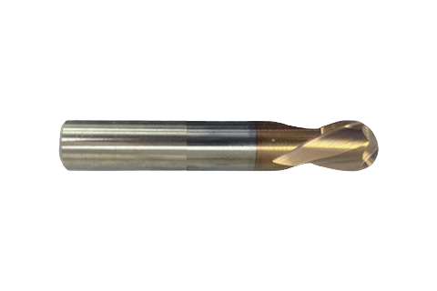

← Mikro Frezeler
Standart Boy
Üreticiden standart boy — stoktan aynı gün kargo, aynı üründen 10+ adette dip fiyat.
KaplamaTSH — 55 HRC sınıfı
Kullanım alanı55 HRC sertliğe kadar
Çap toleransı (D1)0 / −0,02 mm
Şaft toleransı (D2)h6
KarbürMikro tane (ultra-fine)
MenşeiTürkiye — kendi üretimimiz
🚚 Aynı gün kargo
💵 Kapıda ödeme
↩ 14 gün iade
| ⌀ Çap | Boy | R | 10+ Adet | 5-9 Adet | 1-4 Adet | Sipariş | ||
|---|---|---|---|---|---|---|---|---|
| Düz | ||||||||
| 3 | — | — | 16,80 $ | 17,75 $ | 19,09 $ | |||
| 4 | — | — | 26,13 $ | 27,61 $ | 29,69 $ | |||
| Köşe Radius | ||||||||
| 1,0 | 4 | R0,2 | 28,00 $ | 29,59 $ | 31,82 $ | |||
| 1,0 | 4 | R0,2 | 37,33 $ | 39,45 $ | 42,42 $ | |||
| 1,0 | 6 | R0,2 | 28,00 $ | 29,59 $ | 31,82 $ | |||
| 1,0 | 6 | R0,2 | 37,33 $ | 39,45 $ | 42,42 $ | |||
| 1,0 | 8 | R0,2 | 28,00 $ | 29,59 $ | 31,82 $ | |||
| 1,0 | 8 | R0,2 | 37,33 $ | 39,45 $ | 42,42 $ | |||
| 1,5 | 4 | R0,2 | 28,00 $ | 29,59 $ | 31,82 $ | |||
| 1,5 | 4 | R0,2 | 37,33 $ | 39,45 $ | 42,42 $ | |||
| 1,5 | 6 | R0,2 | 28,00 $ | 29,59 $ | 31,82 $ | |||
| 1,5 | 6 | R0,2 | 37,33 $ | 39,45 $ | 42,42 $ | |||
| 1,5 | 8 | R0,2 | 28,00 $ | 29,59 $ | 31,82 $ | |||
| 1,5 | 8 | R0,2 | 37,33 $ | 39,45 $ | 42,42 $ | |||
| 1,5 | 10 | R0,2 | 28,00 $ | 29,59 $ | 31,82 $ | |||
| 1,5 | 10 | R0,2 | 37,33 $ | 39,45 $ | 42,42 $ | |||
| 2,0 | 4 | R0,2 | 28,00 $ | 29,59 $ | 31,82 $ | |||
| 2,0 | 4 | R0,5 | 28,00 $ | 29,59 $ | 31,82 $ | |||
| 2,0 | 4 | R0,2 | 37,33 $ | 39,45 $ | 42,42 $ | |||
| 2,0 | 4 | R0,5 | 37,33 $ | 39,45 $ | 42,42 $ | |||
| 2,0 | 6 | R0,2 | 28,00 $ | 29,59 $ | 31,82 $ | |||
| 2,0 | 6 | R0,5 | 28,00 $ | 29,59 $ | 31,82 $ | |||
| 2,0 | 6 | R0,2 | 37,33 $ | 39,45 $ | 42,42 $ | |||
| 2,0 | 6 | R0,5 | 37,33 $ | 39,45 $ | 42,42 $ | |||
| 2,0 | 8 | R0,2 | 28,00 $ | 29,59 $ | 31,82 $ | |||
| 2,0 | 8 | R0,5 | 28,00 $ | 29,59 $ | 31,82 $ | |||
| 2,0 | 8 | R0,2 | 37,33 $ | 39,45 $ | 42,42 $ | |||
| 2,0 | 8 | R0,5 | 37,33 $ | 39,45 $ | 42,42 $ | |||
| 2,0 | 10 | R0,2 | 28,00 $ | 29,59 $ | 31,82 $ | |||
| 2,0 | 10 | R0,5 | 28,00 $ | 29,59 $ | 31,82 $ | |||
| 2,0 | 10 | R0,2 | 37,33 $ | 39,45 $ | 42,42 $ | |||
| 2,0 | 10 | R0,5 | 37,33 $ | 39,45 $ | 42,42 $ | |||
| 2,0 | 12 | R0,2 | 28,00 $ | 29,59 $ | 31,82 $ | |||
| 2,0 | 12 | R0,5 | 28,00 $ | 29,59 $ | 31,82 $ | |||
| 2,0 | 12 | R0,2 | 37,33 $ | 39,45 $ | 42,42 $ | |||
| 2,0 | 12 | R0,5 | 37,33 $ | 39,45 $ | 42,42 $ | |||
| 3 | — | R0,5 | 16,80 $ | 17,75 $ | 19,09 $ | |||
| 3,0 | 8 | R0,5 | 39,20 $ | 41,43 $ | 44,55 $ | |||
| 3,0 | 8 | R0,5 | 32,98 $ | 34,85 $ | 37,48 $ | |||
| 3,0 | 8 | R1 | 32,98 $ | 34,85 $ | 37,48 $ | |||
| 4 | — | R0,5 | 26,13 $ | 27,61 $ | 29,69 $ | |||
| 4,0 | 12 | R1 | 32,98 $ | 34,85 $ | 37,48 $ | |||
| 4,0 | 12 | R0,5 | 32,98 $ | 34,85 $ | 37,48 $ | |||
| Küre | ||||||||
| 1,0 | — | — | 18,67 $ | 19,73 $ | 21,22 $ | |||
| 1,5 | — | — | 18,67 $ | 19,73 $ | 21,22 $ | |||
| 2,0 | — | — | 18,67 $ | 19,73 $ | 21,22 $ | |||
| 2,5 | — | — | 18,67 $ | 19,73 $ | 21,22 $ | |||
| 3,0 | — | — | 18,67 $ | 19,73 $ | 21,22 $ | |||
| 4,0 | — | — | 18,67 $ | 19,73 $ | 21,22 $ | |||
🤔 Hangi ölçüyü alacağından emin değil misin? ya da ara: 0212 906 03 03